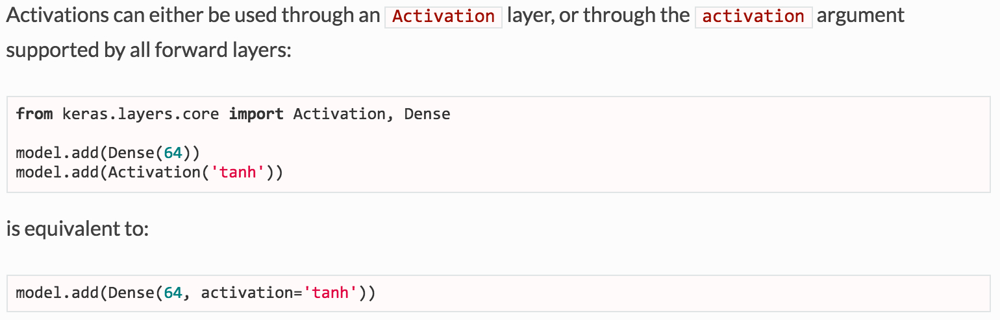
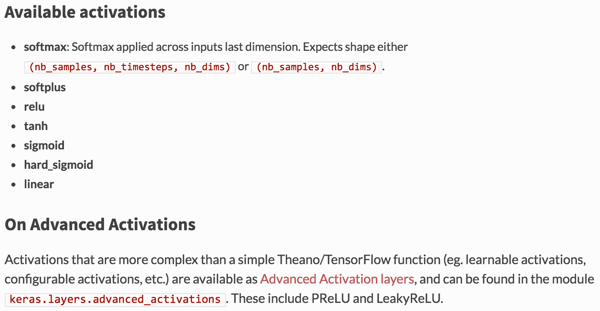
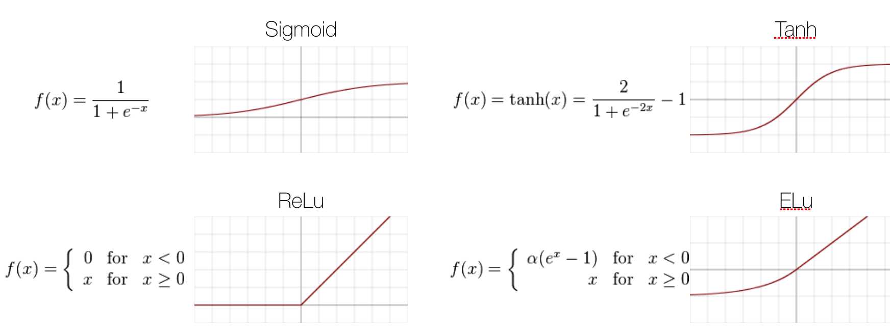
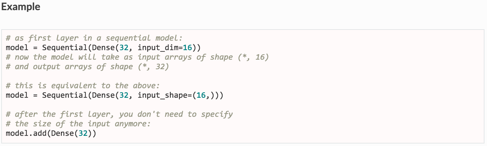
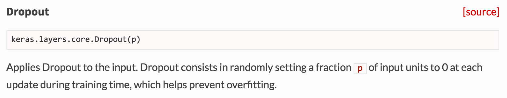

Coursera Course Solutions
12 curated items
In this programming assignment your task is to analyse the mass spectrum of particle decaying into muon-antimuon (dimuon) pairs and figure out the mass of Z boson. Of course, the mass of Z boson can be looked up at the PDG, but it would much more fun to measure it yourself!
At week1 release, you can find the CSV file with dimuon events. If you make a histogram of mass distribution, you can fit a mixture of parametrised signal and background distributions into the shape of the histogram. The signal corresponds to a peak-like shape. The background for simplicity we estimate as a flat level. The parameters of the mixture will be the mass of Z boson and other estimations of the significance and uncertainty of the measurement.
To pass this assignment you have to fit the mixture of 1) Gaussian distribution and 2) flat distribution using scikit-optimise toolkit as it is described in the notebook here. Thus you obtain parameters of those distributions: 1) centre of the Gaussian, it's peak height, and deviation; 2) level of the background. All those parameters you have to submit for the grading as described in the notebook.
The dataset for this assignment is taken from CERN opendata portal http://opendata.cern.ch/record/545
Supporting material in Coursera Course Solutions6 items
Deep learning for HEP
4 curated items · 33 result figures

{kind=link}






Equation of state: critical QCD
26 curated items
Lattice QCD simulations and finding critical point in QCD transitions
This is an updated version of the BEST Collaboration program producing an EoS matching lattice QCD at muB=0, and containing a critical point in the 3D Ising universality class, in a parametrized form. It allows for different choices of constraints on the shape of the critical line, which reduce the number of parameters, as well as the inclusion of no critical point, corresponding to a Taylor expansion of lattice QCD result only.
Moreover, it allows for the choice of strangeness neutrality conditions: nS = 0 && nQ = 0.4 nB or the case of only baryon number: muS = muQ = 0
THE INPUT
Supporting material in Equation of state: critical QCD20 items
Lattice equation of state
21 curated items
Equation of State with Baryon Number, Electric charge and Strangeness Chemical Potential
Lattice Based QCD
Quantum Chromodynamics Equation of State using all three conserved quantities of Baryon number, Electric charge and Strangeness Chemical Potential.
#### INPUT : We need to provide the lattice simulated data of the coefficients of the taylor expansion, to calculate the value of pressure , that can be used to calculate other thermodynamic values.
The required input is a .dat file name "coefficients.dat" which contains the parameters for the parameterization of the taylor coefficients up to an order 4, in total there are 22 coefficients.
Supporting material in Lattice equation of state15 items
Quantum computing at CERN
5 curated items · 9 result figures
This repository contains material from the PennyLane tutorial at CERN on 3/4 February 2021.
Content
Introduction to the seminar (open on github) (open with Google Drive)
Part I: Classical machine learning with automatic differentiation
Notebook 1-classical-ml-with-automatic-differentiation (open on github) (open with colab)